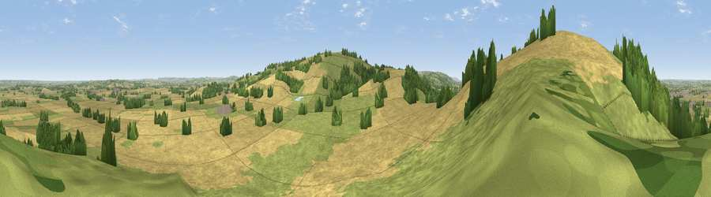

Viewpoint near Lower Quinton
#15177 in England · top 31% of its area beats it · near Lower QuintonWhere it is
The exact computed spot (SP 18225 45125). Click the marker for map links.
The view, rendered

A 360° render of this exact spot computed from the terrain model, tree cover and land cover — summer colours, afternoon light, calibrated against photographs of famous viewpoints. Real trees, hedges and buildings will differ in detail.
The panorama
Grey silhouette: terrain skyline in each direction (720 bearings, Earth curvature and refraction included). Dashed green: skyline with trees (+15 m) and buildings (+8 m) as obstacles. Blue strip: how far the ground is visible on each bearing.
Where the view opens
Wedge length = distance to the farthest visible ground on that bearing (vegetation-aware). Rings at 10, 25 and 50 km.
What fills the view
47% cropland · 44% grassland · 8% woodland
Angular shares of the visible panorama (visual magnitude), not map area. Landscape diversity 0.41 (0–1 Shannon).
Key numbers
More beautiful places nearby
The staircase of upgrades: each row has a higher view potential than everything closer. Driving times are estimates from straight-line distance, calibrated against real road routing — check an actual route before setting out.
| Place | Direction | Drive | Score |
|---|---|---|---|
| Viewpoint near Meon Vale | WNW · 1 km | ~2 min | 77.0 |
| Broadway Hill | SW · 11 km | ~21 min | 77.7 |
| Viewpoint near Elmley Castle | WSW · 21 km | ~36 min | 80.5 |
| Bredon Hill | WSW · 23 km | ~38 min | 83.0 |
| North Hill | W · 41 km | ~61 min | 86.8 |
| Worcestershire Beacon | W · 41 km | ~61 min | 87.1 |
| Viewpoint near West Quantoxhead | SW · 147 km | ~170 min | 87.9 |
| Viewpoint near West Quantoxhead | SW · 148 km | ~171 min | 88.7 |
52.10416, -1.73533 · source: screening · position refined by local search. Computed location — check access rights before visiting.